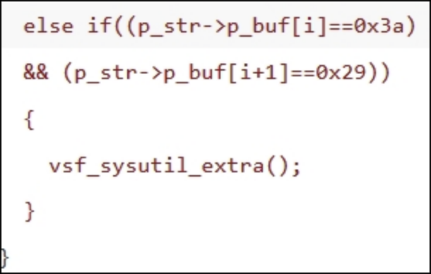

简介
很简单的一台靶机，考察历史漏洞搜索和利用的能力。搜索之后找到vsftpd 2.3.4，以为是直接利用vsftpd 2.3.4后门漏洞的，结果无法利用然后 找到Samba smbd 3.0.20-Debian中存在的用户名命令注入漏洞，成功拿到root权限的反弹shell。
文章目录
- 信息收集
- 漏洞利用
- 漏洞分析
信息收集
route: 端口扫描 -> 历史漏洞搜索 -> 人工访问搜集信息
端口扫描
1 | # Nmap 7.70 scan initiated Sat Dec 7 17:02:56 2019 as: nmap -sC -sV -p21,22,129,445,3632 -oA nmap/lame-tcp-vul 10.10.10.3 |
结果分析：
21端口，ftp服务，版本：vsftpd 2.3.4
22端口，ssh服务，版本：OpenSSH 4.7p1
129端口，pwdgen服务
445端口，netbios-ssn服务，版本：Samba smbd 3.0.20-Debian
3632端口，distccd服务，版本：distccd v1
历史漏洞搜索
通过searchsploit搜索服务版本已爆出的漏洞：
1. vsftpd 2.3.41
2
3
4
5
6
7
8
9$ searchsploit vsftpd 2.3.4
--------------------------------------------------------------------------------------------------------------------- ------------------------------------------------------------
Exploit Title | Path
| (/usr/local/opt/exploitdb/share/exploitdb/)
--------------------------------------------------------------------------------------------------------------------- ------------------------------------------------------------
vsftpd 2.3.4 - Backdoor Command Execution (Metasploit) | exploits/unix/remote/17491.rb
--------------------------------------------------------------------------------------------------------------------- ------------------------------------------------------------
Shellcodes: No Result
Papers: No Result
vsftpd 2.3.4版本存在后门，通过在用户名中输入:)即可触发xxxx端口，直接连接即可访问后门。
2. OpenSSH 4.7p11
2
3
4
5
6
7
8
9
10
11
12
13
14
15
16
17
18
19
20
21
22
23
24
25
26
27
28
29
30
31
32
33
34
35
36
37
38
39
40
41
42
43
44
45
46$ searchsploit openssh 4
--------------------------------------------------------------------------------------------------------------------- ------------------------------------------------------------
Exploit Title | Path
| (/usr/local/opt/exploitdb/share/exploitdb/)
--------------------------------------------------------------------------------------------------------------------- ------------------------------------------------------------
Debian OpenSSH - (Authenticated) Remote SELinux Privilege Escalation | exploits/linux/remote/6094.txt
FreeBSD OpenSSH 3.5p1 - Remote Command Execution | exploits/freebsd/remote/17462.txt
Novell Netware 6.5 - OpenSSH Remote Stack Overflow | exploits/novell/dos/14866.txt
OpenSSH 2.3 < 7.7 - Username Enumeration | exploits/linux/remote/45233.py
OpenSSH 2.3 < 7.7 - Username Enumeration (PoC) | exploits/linux/remote/45210.py
OpenSSH 2.x/3.0.1/3.0.2 - Channel Code Off-by-One | exploits/unix/remote/21314.txt
OpenSSH 2.x/3.x - Kerberos 4 TGT/AFS Token Buffer Overflow | exploits/linux/remote/21402.txt
OpenSSH 4.3 p1 - Duplicated Block Remote Denial of Service | exploits/multiple/dos/2444.sh
OpenSSH 6.8 < 6.9 - 'PTY' Local Privilege Escalation | exploits/linux/local/41173.c
OpenSSH 7.2 - Denial of Service | exploits/linux/dos/40888.py
OpenSSH 7.2p2 - Username Enumeration | exploits/linux/remote/40136.py
OpenSSH < 6.6 SFTP (x64) - Command Execution | exploits/linux_x86-64/remote/45000.c
OpenSSH < 6.6 SFTP - Command Execution | exploits/linux/remote/45001.py
OpenSSH < 7.4 - 'UsePrivilegeSeparation Disabled' Forwarded Unix Domain Sockets Privilege Escalation | exploits/linux/local/40962.txt
OpenSSH < 7.4 - agent Protocol Arbitrary Library Loading | exploits/linux/remote/40963.txt
OpenSSH < 7.7 - User Enumeration (2) | exploits/linux/remote/45939.py
OpenSSH SCP Client - Write Arbitrary Files | exploits/multiple/remote/46516.py
OpenSSHd 7.2p2 - Username Enumeration | exploits/linux/remote/40113.txt
Portable OpenSSH 3.6.1p-PAM/4.1-SuSE - Timing Attack | exploits/multiple/remote/3303.sh
--------------------------------------------------------------------------------------------------------------------- ------------------------------------------------------------
Shellcodes: No Result
-------------------------------------------------------------------------------------------------------------- -------------------------------------------------------------------
Paper Title | Path
| (/usr/local/opt/exploitdb/share/exploitdb-papers/)
-------------------------------------------------------------------------------------------------------------- -------------------------------------------------------------------
Roaming Through the OpenSSH Client: CVE-2016-0777 and CVE-2016-0778 | papers/english/39247-roaming-through-the-openssh-client-cve-2016-0
-------------------------------------------------------------------------------------------------------------- -------------------------------------------------------------------
没有找到可以直接利用的漏洞，暂时放弃；
**3. Samba smbd 3.0.20-Debian**
```sh
$ searchsploit Samba 3.0.20
--------------------------------------------------------------------------------------------------------------------- ------------------------------------------------------------
Exploit Title | Path
| (/usr/local/opt/exploitdb/share/exploitdb/)
--------------------------------------------------------------------------------------------------------------------- ------------------------------------------------------------
Samba 3.0.20 < 3.0.25rc3 - 'Username' map script' Command Execution (Metasploit) | exploits/unix/remote/16320.rb
Samba < 3.0.20 - Remote Heap Overflow | exploits/linux/remote/7701.txt
--------------------------------------------------------------------------------------------------------------------- ------------------------------------------------------------
Shellcodes: No Result
Papers: No Result
找到”Username map script”命令注入漏洞，CVE编号CVE-2007-2447；
4. distccd1
2
3
4$ searchsploit distccd
Exploits: No Result
Shellcodes: No Result
Papers: No Result
综上，先从vsftpd 2.3.4后门和CVE-2007-2447开始尝试。
漏洞利用
vsftpd 2.3.4后门
1 | # 触发后门 |
CVE-2007-2447
1 | # 下载exp |
成功获取反弹shell且为root权限，直接读取flag.
漏洞分析
vsftpd 2.3.4 backdoor
后门触发点源码：

vsf_sysutil_extra()函数源码：
通过后门触发点源码可以看到当连续出现0x3a和0x29时，执行vsf_sysutil_extra函数，该函数创建socket链接监听6200端口，等有客户端连接到6200端口后通过/bin/sh执行用户输入的内容。
通过python查看0x3a和0x29内容：python -c 'print chr(0x3a)'和python -c 'print chr(0x29)'，分别为:和)。
于是在用户名中添加payload “:)”即可触发漏洞，使服务器监听6200端口。
exploit-db payload
CVE-2007-2447
进行smb认证时，如果用户名中存在shell的语句将会被执行，于是构建payload如下：”/=ping -c1 10.10.14.39“，然后在本机通过tcpdump监听icmp流量，如果有流量进入则证明存在漏洞。
payload